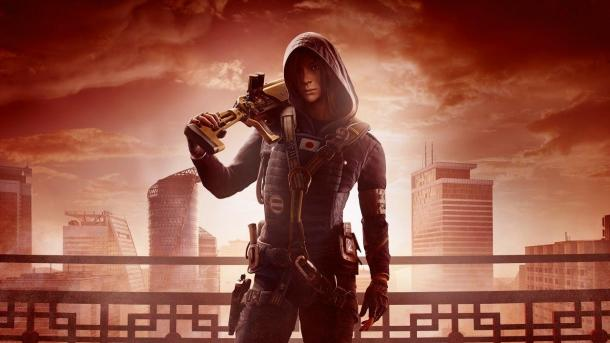

Оперативник Rainbow Six Siege - Hibana
- Гаджет: установка X-KAIROS
- Броня: 1/3
- Скорость: 3/3
Что делает Hibana чрезвычайно эффективным оперативником? Ее гаджет X-KAIROS. Речь идет о пушке, которая выстреливает шестью взрывными кластерами, способными пропилить небольшое прямоугольное отверстие в усиленных поверхностях. Всего в арсенале Hibana имеется три заряда для X-KAIROS. Это означает, что игрок получает возможность создать один большой прорез в стене, в который могут стоя пройти товарищи по команде. Если точка входа не нужна, то X-KAIROS можно использовать для создания линий наблюдения в усиленных стенах. Подобный трюк даст возможность наблюдать за широкой площадью помещения и ловить ошарашенных врагов на ошибках, когда она, например, решат выглянуть из укрытия или перебежать на другую позицию.
X-KAIROS также может разрушать укрепленные окна и тонкие стены, как и гранатомет Ash. Вот только установка зарядов X-KAIROS может быть бесполезна при наличии во вражеской команде оперативников Mute или Bandit: они могут поставить под разрушаемые поверхности свои генераторы и пилы Hibana станут бесполезными. Оперативница не может пилить усиленные стены так же быстро и эффективно, как Термит, зато ей не нужно рисковать жизнью, устанавливая заряд в хорошо простреливаемых точках: X-KAIROS стреляет на достаточно большом расстоянии.
Вместе с тем Hibana есть что предложить кроме своего гаджета. Оперативница имеет третий уровень скорости, что позволяет ей быстро перемещаться по карте и атаковать несколько точек входа - идеально подходит для подавления и дезориентации защитников. Hibana имеет одну из лучших штурмовых винтовок в игре, Type 89F. Оружия имеет довольно маленький магазин, но его останавливающая способность и точность делают Type-89 невероятно эффективным атакующим оружием. Но есть у Hibana и еще один козырь - пистолет-пулемет Bearing 9. Некоторые игроки используют эту пушку, как основное оружие, что, в общем, неудивительно, ведь по части урона Bearing 9 не сильно уступает Type-89, а по количеству патронов в магазине даже превосходит основной ствол. Единственный минус – пистолет-пулемет не сильно эффективен на больших дистанциях из-за большого разброса снарядов.